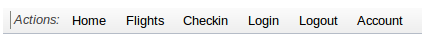

In Part 4 of this series you’ll create a cookbook to deploy AcmeAir, and use this to automatically deploy after a successful Jenkins build. This will complete the continuous deployment pipeline from committing code to deploying a working application.
In Part 4 of this series you’ll create a cookbook to deploy AcmeAir, and use this to automatically deploy after a successful Jenkins build. This will complete the continuous deployment pipeline from committing code to deploying a working application.
Welcome to the final part of this series. This time we’re going to write a cookbook which will configure a machine to run AcmeAir by downloading the latest build from Jenkins. We’ll then trigger this automatically after Jenkins runs a successful build, completing our continuous deployment pipeline.
Before we start, if you don’t have your Jenkins VM running from Part 3, bring it up by running, from inside <cookbooks>/acmeair_ci:
$ vagrant up
Set up an Enterprise Chef account
In Part 3 we provisioned our Jenkins CI server using chef-solo, meaning we could run everything locally without a Chef server. This time, we’re going to use the full chef-client, with our cookbooks uploaded to the Chef server.
- First thing you need to do is create an Enterprise Chef account.
- Once you’ve done this, open your Chef organizations page and select your organization.
- Click download StarterKit and unzip the downloaded package to your local file system. This creates a directory named
chef-repo. - Make a note of your organization name as you’ll need it later.
- We need some configuration files from
chef-repoin our home directory to allow the ChefDK tools to authenticate with the Chef server when we upload our cookbooks. Do this by running:$ cp <chef-repo>/.chef/knife.rb ~/.chef/ $ cp <chef-repo>/.chef/*.pem ~/.chef/
Create a cookbook to deploy AcmeAir
- Open a terminal window and navigate to your
cookbooksdirectory. On Windows, open your command prompt as an Administrator. - Create a new cookbook named
acmeair:$ berks cookbook acmeair - Append the following lines to the end of
<cookbooks>/acmeair/metadata.rbto declare the cookbook’s dependencies:depends 'apt' depends 'wlp'The default recipe for this cookbook is a bit more involved than the one for our CI server last time. It’s going to download the results of the last successful build and run it on a Liberty profile server.
- Replace the contents of
<cookbooks>/acmeair/recipes/default.rbwith the following:include_recipe "apt" include_recipe "wlp" liberty_dir = "/opt/was/liberty/wlp/"; # create directories for shared resources and server definition ["#{liberty_dir}/usr/shared/resources/derby/", "#{liberty_dir}/usr/servers/acmeair/", "#{liberty_dir}/usr/servers/acmeair/apps/"].each do | name | directory name do mode 00775 owner "wlp" group "wlp-admin" action :create recursive true end end jenkins_ip = "REPLACE ME" jenkins_base_url = "http://#{jenkins_ip}:8080/job/AcmeAir%20tests/lastSuccessfulBuild/artifact" # mapping of remote resources to local files url_map = { "#{liberty_dir}/usr/shared/resources/derby/derby.jar" => "#{jenkins_base_url}/acmeair-itests/target/usr/shared/resources/derby/derby.jar", "#{liberty_dir}/usr/servers/acmeair/server.xml" => "#{jenkins_base_url}/acmeair-itests/src/main/resources/servers/acmeair/server.xml", "#{liberty_dir}/usr/servers/acmeair/bootstrap.properties" => "#{jenkins_base_url}/acmeair-itests/src/main/resources/servers/acmeair/bootstrap.properties", "#{liberty_dir}/usr/servers/acmeair/apps/acmeair.war" => "#{jenkins_base_url}/acmeair-webapp/target/acmeair-webapp-1.0-SNAPSHOT.war" } # download each file and place it in right directory url_map.each do | file, url | remote_file file do source url user "wlp" group "wlp-admin" action :create end end # start server if it is not running already wlp_server "acmeair" do action :start end # populate the database bash "populate db" do user "wlp" group "wlp-admin" code <<-EOH for retry in {1..10} do wget http://localhost:9081/acmeair/rest/api/loader/loadSmall -O - if [ "$?" = 0 ]; then break else sleep 1 fi done EOH endThe
jenkins_ipvariable need changing to the Jenkins IP you noted down last in the last article. It should be of the form172.28.128.x. - We should commit these changes by running:
$ git add . $ git commit -m "Author AcmeAir default recipe" - If you’re on Windows, run:
$ set SSL_CERT_FILE=C:opscodechefdkembeddedsslcertscacert.pem - Then download the cookbooks we need by running:
$ berks install - We also want to upload these to our Chef server so our production machine can access them later. Do this by running:
$ berks upload - If you get errors, you may need to (temporarily) add Chef’s Ruby installation to your path:
$ export PATH=:/opt/chefdk/embedded/bin:$PATH - Since we’re running Liberty again, we’ll need the Liberty jars we downloaded last time. Just copy them over using:
$ cp <cookbooks>/acmeair_ci/wlp-developers-* <cookbooks>/acmeair
The cookbook is now complete, and uploaded to the Chef server.
Run AcmeAir on a Vagrant VM
We’re going to use Vagrant again to create a VM to run our production server. We need to make a few changes to the Vagrantfile to use chef-client.
- The easiest thing to do is replace your
<cookbooks>/acmeair/Vagrantfilewith the following:# -*- mode: ruby -*- # vi: set ft=ruby : # Vagrantfile API/syntax version. Don't touch unless you know what you're doing! VAGRANTFILE_API_VERSION = "2" ORGANISATION = "YOUR CHEF ORGANISATION NAME" Vagrant.require_version ">= 1.5.0" Vagrant.configure(VAGRANTFILE_API_VERSION) do |config| config.vm.hostname = "acmeair" config.omnibus.chef_version = :latest config.vm.box = "opscode_ubuntu-12.04_provisionerless" config.vm.box_url = "https://opscode-vm-bento.s3.amazonaws.com/vagrant/opscode_ubuntu-12.04_provisionerless.box" config.vm.network :private_network, type: "dhcp" config.vm.provision :chef_client do |chef| chef.node_name = "acmeair" chef.json = { "wlp" => { "archive" => { "accept_license" => "true", "base_url" => "file:///vagrant/" } } } chef.provisioning_path = "/etc/chef" chef.chef_server_url = "https://api.opscode.com/organizations/#{ORGANISATION}" chef.validation_client_name = "#{ORGANISATION}-validator" chef.validation_key_path = "~/.chef/#{ORGANISATION}-validator.pem" chef.run_list = [ "recipe[acmeair::default]" ] end endThe one thing you need to change is the
ORGANISATIONvariable. You need to change this to the name of the Chef organisation you created when you signed up for Enterprise Chef. - To bring up your VM, in
<cookbooks>/acmeair/run:$ vagrant upIt will use the Liberty cookbook to install Liberty server, and execute the AcmeAir cookbook to setup Liberty server definition for the application. Since
chef-clientwill be running for the first time, it will take a while to complete. -
After this has finished (you may want to get a cup of tea), get the IP of the machine by running:
$ vagrant ssh -c ifconfigI’ll refer to this IP as AcmeAir IP.
At this point, the AcmeAir application should be fully deployed and running on the “acmeair” node. To verify, go to <AcmeAir IP>:9081/acmeair.
Deploy AcmeAir automatically with Jenkins
Let’s now create a new Jenkins build job to SSH into the acmeair machine and run chef-client to update it. This should run after all the integration tests pass.
First, we need to tell Jenkins where to SSH into.
- In your web browser, open
<Jenkins IP>:8080. - Click Manage Jenkins.
- Click Configure System.
- Under “SSH remote hosts” enter:
- Hostname:
<AcmeAir IP> - Port:
22 - User Name:
vagrant - Password/Passphrase:
vagrant
- Hostname:
- Click Save.
Back on the Jenkins homepage, let’s create the build job:
- Click on New item.
- Type in
AcmeAir-Chefas the Item name. - Select Build a free-style software project.
- Click OK.
- Under Build click on Add build step and choose Execute shell script on remote host using ssh.
- Choose vagrant@<AcmeAir IP>:22 in Name field under SSH Server.
- Set Command to
sudo chef-client. - Click Save.
Next, we will need to update the existing AcmeAir tests job to trigger the AcmeAir-Chef job:
- Open
<Jenkins IP>:8080/job/AcmeAir tests/configureto edit the “AcmeAir tests” job. - Under Post-build Actions click on Add post-build action and choose Build other projects.
- Under Projects to build type in
AcmeAir-Chef. - Click Save.
- Verify that the
AcmeAir testsjobs triggers theAcmeAir-Chefjob by clicking Build Now to request a newAcmeAir testsbuild. - Next, click on Back to Dashboard to view the build queue and status of the jobs. They should both complete successfully within a couple of minutes.
Tying it all together
Let’s make a change to the AcmeAir code and commit it to test out our new continuous deployment pipeline.
Open up Eclipse and do the following:
- Open up index.html in acmeair-webapp/src/main/webapp/.
- Delete line 99:
<div data-dojo-type="ToolbarSectionStart" data-dojo-props='label:"Actions"'></div> - If not already started, start your Liberty profile server.
- Right-click WebSphere Application Server V8.5 Liberty Profile in the Servers view.
- Click Start.
Once the server has started, go to http://localhost:9080/acmeair-webapp to see the difference.
Before:

{kind=link}
{kind=link}
If you’re happy with the change, commit it and push to GitHub:
- Right click on the acmeair project and select Team > Commit….
- Type in
Make toolbar prettieras the commit message. - Under Files ensure only the acmeair-common.js file is selected.
- Click Commit and Push.
Now the changes are committed, sit back and watch as Jenkins automatically builds it, tests it, and deploys it.
Once finished, go to <AcmeAir IP>:9081/acmeair and check the welcome page. If the actions bar has been updated, then the deployment was a success, and our pipeline is complete.
We’d love your feedback. Post your questions on Stack Overflow, or open issues in our GitHub repositories: WASdev/ci.chef.wlp and WASdev/ci.chef.wlp.application.
I’m also wondering the following:
Shouldn’t you be deploying to prod (and staging) exactly the same thing you built? So, like mike said, I would maybe rather. at build time, build up a packaged server, complete with correct jars, WAR (in e.g. apps folder), server xmls etc.
Also, what about environment-specific variables? I like the bluemix yml file and would like to see this approach applied to a built server (zip) artifact?
Interesting articles,
How do you manage version updates of Liberty or the JDK?
How do you ensure production deploys the same version of Liberty/JDK to production that the developer used on their laptop?
Mike